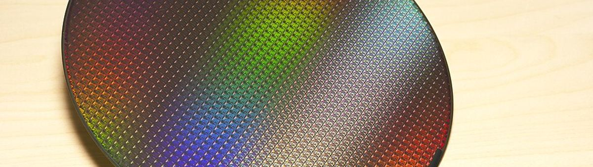
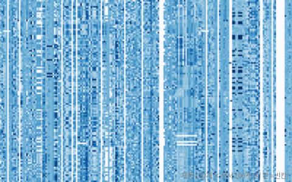

사진: AI 생성 이미지 · 프롬프트 공개UCI (McCann & Johnston, 2008), 반도체 제조 공정 센서 590개 × 1,567개 제품, 불량 104개. 센서 이름은 공개되지 않음

| 0 | 1 | 2 | 3 | 4 | 5 | 6 | 7 | label |
|---|---|---|---|---|---|---|---|---|
| 2,926.4 | 2,421.4 | 2,181.0 | 998.5 | 1.399 | 100 | 106.3 | 0.1216 | pass |
| 2,935.3 | 2,551.3 | 2,276.5 | 2,148.5 | 1.232 | 100 | 93.68 | 0.1199 | pass |
| 3,023.6 | 2,555.9 | 2,205.3 | 1,412.7 | 0.9785 | 100 | 95.26 | 0.1216 | pass |
| 3,042.4 | 2,493.8 | 2,124.8 | 1,180.3 | 0.8465 | 100 | 100.8 | 0.1257 | pass |
| 2,965.5 | 2,467.9 | 2,178.7 | 1,657.4 | 1.66 | 100 | 100.8 | 0.1229 | pass |
| 2,974.9 | 2,473.3 | 2,200.7 | 1,602.8 | 0.979 | 100 | 95.33 | 0.122 | pass |
| 열 | 종류 | 빈칸 | 고유값 수 | 범위 · 대표값 |
|---|---|---|---|---|
| 0 | 숫자 | 0.4% | 1520 | 2,743.2 ~ 3,356.3 (평균 3,014.5) |
| 1 | 숫자 | 0.4% | 1504 | 2,158.8 ~ 2,846.4 (평균 2,495.9) |
| 2 | 숫자 | 0.9% | 507 | 2,060.7 ~ 2,315.3 (평균 2,200.5) |
| 3 | 숫자 | 0.9% | 518 | 0 ~ 3,715.0 (평균 1,396.4) |
| 4 | 숫자 | 0.9% | 503 | 0.6815 ~ 1,114.5 (평균 4.197) |
| 5 | 숫자 | 0.9% | 1 | 100 ~ 100 (평균 100) |
| 6 | 숫자 | 0.9% | 510 | 82.13 ~ 129.3 (평균 101.1) |
| 7 | 숫자 | 0.6% | 89 | 0 ~ 0.1286 (평균 0.1218) |
| 8 | 숫자 | 0.1% | 1208 | 1.191 ~ 1.656 (평균 1.463) |
| 9 | 숫자 | 0.1% | 568 | -0.0534 ~ 0.0749 (평균 -0.0008) |
| 10 | 숫자 | 0.1% | 392 | -0.0349 ~ 0.053 (평균 0.0001) |
| 11 | 숫자 | 0.1% | 378 | 0.6554 ~ 0.9848 (평균 0.9644) |
| 12 | 숫자 | 0.1% | 1547 | 182.1 ~ 272 (평균 200) |
| 13 | 숫자 | 0.2% | 1 | 0 ~ 0 (평균 0) |
| 14 | 숫자 | 0.2% | 1555 | 2.249 ~ 19.55 (평균 9.005) |
| 15 | 숫자 | 0.2% | 1561 | 333.4 ~ 824.9 (평균 413.1) |
대부분 거의 다 차 있지만, 반 이상 빈 센서도 있다
달마다 다르다: 시간 순서로 나눠야 하는 이유
| ① 한 행 | 제품 (웨이퍼) 하나 |
| ② 입력 X | 센서 값 590개 (빈칸 많음) |
| ③ 출력 y | 최종 검사 불량인가 |
| ④ 평가지표 | 재현율 · 정밀도 (불량을 놓치지 않기) |
| ⑤ 기준선 | 전부 '양품' |
문제를 정할 때 처음 채워 보는 칸들입니다. 여기서 끝이 아니라, 시험 데이터를 어떻게 나눌지 · 틀렸을 때 손해가 얼마인지 · 예측 시점에 정말 알 수 있는 값인지 같은 칸을 더 붙일수록 좋은 문제가 됩니다.
all good accuracy 94.5% precision 0% recall 0% logistic (balanced) accuracy 90.7% precision 0% recall 0% re-inspect the top 20%: caught 6 of 26 fails (re-inspecting a random 20% would catch about 5) ROC-AUC 0.59 (0.5 = coin flip)
누가, 왜, 어떻게 만든 데이터인지 직접 확인해 보세요.
인턴 · 산학협력 · 프로젝트 주제를 고를 때 참고하세요 (일반적인 예시).